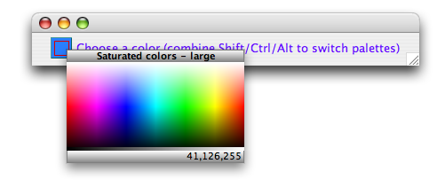
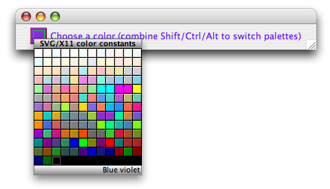
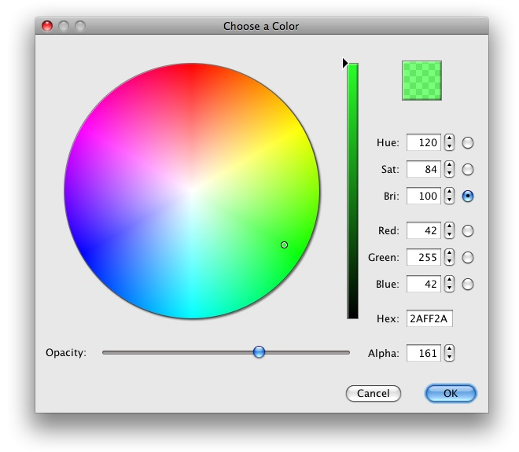

Quick Color Chooser
The Quick Color Chooser has several palettes (or you can add your own) -
combinations of Alt, Shift and Ctrl (Command on Macintosh) switch palettes
on the fly. Continuous (rainbow) saturated and desaturated palettes are
provides, along with a palette of swatches containing the SVG/XWindows
color contants, Swing and AWT constants, and a history palette of recently
selected colors. The class
com.bric.swing.ColorPicker is the entry point.

|
Download
UsageThis is an extremely simple component with one property of interest -color:
final ColorChooser cc = new ColorChooser();
someContainer.add (cc);
cc.addActionListener (new ActionListener() {
public void actionPerformed (ActionEvent ae) {
something.setColor (cc.getColor());
}
});
|
To install it, simply choose Tools | Plugins, go to the
Downloaded tab. Click Add Plugins and choose
click the radio
button in the wizard that says Install Manually Downloaded Modules,
select the nbm file and it
will appear on the component palette in Matisse.

Color PickerThe ColorPicker is a separate subproject that offers detailed control in choosing/browsing colors:  |
Download
UsageThis dialog can be invoked in one simple line: Color newColor = ColorPicker.showDialog( myFrame, originalColor); The ColorPicker itself is a resizable JComponent and it can be placed anywhere in your application, but it was primarily designed to be used in a dialog.
AboutThe ColorPicker project is maintained by mickleness, and is discussed in a little bit more detail here. |